The Wrangler National Finals Rodeo is the season-ending championship event for the Professional Rodeo Cowboys Association and the Women’s Professional Rodeo Association and is widely acknowledged to be the world’s premier rodeo. Held every December since 1985 at the Thomas & Mack Center in Las Vegas, the Wrangler NFR is ProRodeo’s richest and most prestigious rodeo, and it showcases the very best cowboys, barrel racers and livestock in the world.
2019 WNFR Steer Wrestlers Profiles
Scott Guenthner: Scott Guenthner – Provost, Alberta ($102,750) 3-time WNFR qualifier
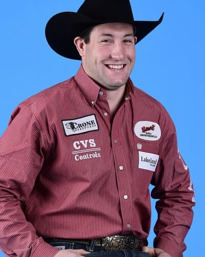
Scott Guenthner has had a lot on his mind while preparing for the Canadian Finals Rodeo (CFR) and the Wrangler National Finals Rodeo.
He set a goal of winning the Canadian title just like his father did. Scott accomplished that last year. His father, Ken, won it in 1981. Now he wants to win another one and of course, the ultimate in rodeo a gold buckle that says world champion steer wrestler.
Professional
2019 Highlights
• Won Rodeo Austin (Texas)
• Won the All American ProRodeo Finals (Waco, Texas)
• Won the Grande Prairie (Alberta) Stompede
• Won the Brooks (Alberta) Kinsmen Pro Rodeo
• Won the Manitoba (Morris) Stampede & Exhibition
• Won the Dawson Creek (British Columbia) Exhibition and Stampede
Kyle Irwin: Kyle Irwin – Robertsdale, Ala. ($83,472) 5-time WNFR qualifier
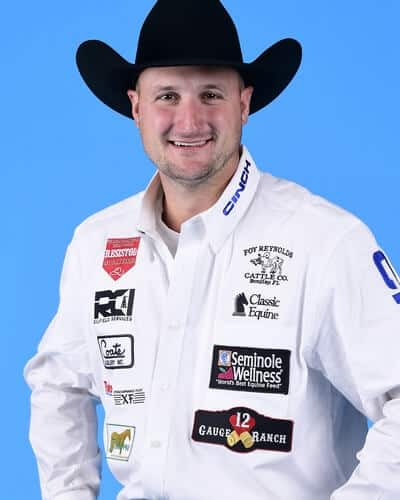
Kyle Irwin has rightly earned the nickname Alabama Slamma.
The native of Robertsdale, Alabama has qualified for the Wrangler National Finals Rodeo five times. That’s twice more than any other Alabaman in NFR history. Rick Carpenter competed on three occasions in the saddle bronc riding.
Kyle made his first trip to Las Vegas to compete for rodeo’s championships in 2014. He qualified in 10th place and with a stellar NFR finished as the reserve world champion. He was back again in 2015, missed 2016 and has been there each year since.
Professional
2019 Highlights
• Won the Ropin Dreams (Jourdanton, Texas)
• Won the Molalla (Ore.) Buckeroo Rodeo
• Won the Lawton (Okla.) Rangers Rodeo
• Won the Dillon (Mont.) Jaycees PRCA Rodeo-Montana’s Biggest Weekend
J.D. Struxness: J.D. Struxness – Milan, Minn. ($82,829) 3-time WNFR qualifier
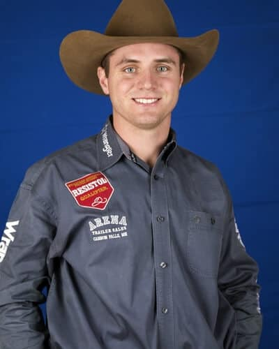
Minnesota has a lot to be proud of in steer wrestler J.D. Struxness. The Milan resident is headed to his third Wrangler National Finals Rodeo with $82,829 in regular season earnings and in 10th place.
J.D.’s start in professional rodeo began in 2014 while he was still in college. The next year, he nearly qualified for his first NFR missing it by just four positions. His 19th place finish saw him with $55,450 and winning the Rookie of the Year in the steer wrestling.
Professional
2019 Highlights
• Won the Reno (Nev.) Rodeo
• Won Tulsa (Okla.) State Fair PRCA Rodeo
• Won the Woodward (Okla.) Elks Rodeo
• Won the New Mexico (Albuquerque) State Fair & Rodeo
• Co-champion at the Tri-State Rodeo Cinch Shoot-Out (Fort Madison, Iowa)
Cameron Morman: Cameron Morman – Glen Ullin, N.D. ($76,704) First-time WNFR qualifier
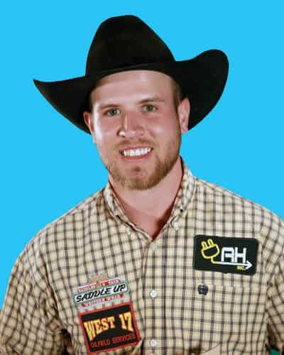
Cameron Morman will be one of two North Dakota cowboys competing at the 2019 Wrangler National Finals Rodeo. Since the other North Dakotan is bareback rider Ty Breuer, the first time Cameron rides in front of a crowd at the Thomas & Mack Center, he will be carrying the flag of his home state in the grand entry.
After graduating high school in a class of about a dozen students in 2012, Cameron joined the PRCA in 2013. He competed in college rodeo for Dickinson State University, less than an hour’s drive west of his hometown, and qualified for the College National Finals Rodeo three times. He won the college steer wrestling championship in 2015 and earned his ag business degree in 2016.
Professional
2019 Highlights
• Won Badlands Circuit Finals (Minot, N.D.)
• Won the American Royal Pro Rodeo (Kansas City, Kan.)
Ty Erickson: Ty Erickson – Helena, Mont. ($146,081) 6-time WNFR qualifier
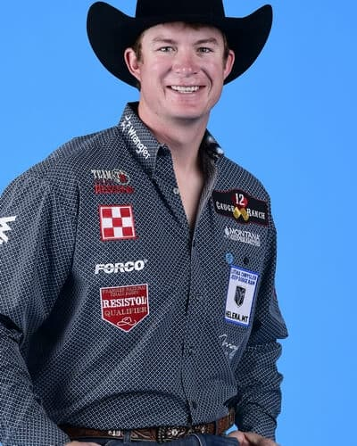
Ty Erickson has had the best regular season of an eight-year career that has seen him win over $1 million. And, he’s not slowing down one bit.
He started the year off with a win at the National Western Stock Show in Denver last January. The end of February found him second in the world standings. Then he headed to RFD-TV’s The American and magic happened.
Professional
2019 Highlights
• Won the National Western Stock Show and Rodeo (Denver, Colo.)
• Won The American (Arlington, Texas)
• Won the World’s Oldest Rodeo (Prescott, Ariz.)
• Won the YMBL Championship Rodeo (Beaumont, Texas)
• Won the Belt (Mont.) PRCA Rodeo
• Co-champion at the Ogden (Utah) Pioneer Days
• Co-champion at the Central Montana (Lewiston) Ram Pro Rodeo
• Co-champion at the Magic Valley Stampede (Filer, Idaho)
Bridger Chambers: Bridger Chambers – Stevensville, Mont. ($79,028) 2-time WNFR qualifier
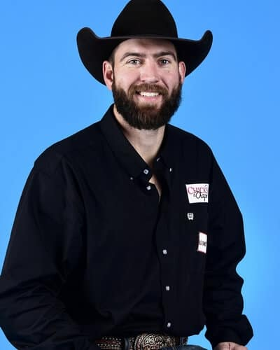
Steer wrestling is known as a “big man’s” evemt, and that suits Bridger Chambers. At 6’5” he towers over most other WNFR contestants. A former college basketball player, Bridger is believed to be the only athlete to compete in the NAIA national championship basketball tournament and the College National Finals Rodeo in the same year, as a senior at the University of Montana Western in 2012.
While Bridger has always been a talented steer wrestler, he mainly competed in his circuit while running a drug dog business for the past six years with his father Keith, a former college basketball teammate of 1997 World Champion Steer Wrestler Brad Gleason, another Montanan.
Professional
2019 Highlights
• Won the Montana (Great Falls) Pro Rodeo Circuit Finals
• Won the Lions’ Dixie Roundup (St. George, Utah)
Will Lummus: Will Lummus – West Point, Miss. ($86,395) 2-time WNFR qualifier
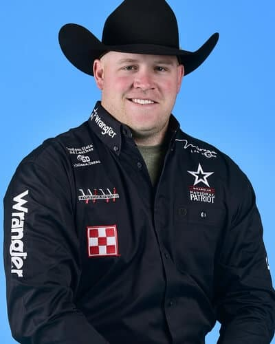
Will Lummus quickly became one of the most popular steer wrestlers at the 2018 Wrangler National Finals Rodeo.
It was his first appearance and right out of the gate, the likeable Mississippian was getting checks. In fact, he won round five and including that round, got checks in seven out of the first eight rounds.
He had entered in fifth place. His success in the Thomas and Mack arena had him on pace to win a world title. Then disaster struck in the ninth round. A no-time took him out of the average and he finished the season in third place.
Disappointment didn’t last long. He still left Las Vegas with $132,551 and it wasn’t long until he was geared up for the 2019 season. After the winter rodeos he had moved into the top 15 in the world standings. He continued to climb through the summer.
Professional
2019 Highlights
• Won the 142nd Silver Spurs Rodeo (Kissimmee, Fla.)
• Won the 71st Annual PRCA Rodeo (Crossett, Ark.)
• Won the Richland County Fair & Rodeo (Sidney, Mont.)
• Co-champion at the Gooding (Idaho) Pro Rodeo
Matt Reeves: Matt Reeves – Cross Plains, Texas ($79,490) 7-time WNFR qualifier
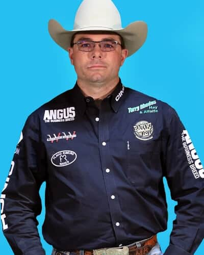
Matt Reeves is back among the Top 15 steer wrestlers in the world, after missing the Wrangler National Finals Rodeo for two years.
He last qualified for professional rodeo’s year-end championship in 2016. That year he placed in seven of the ten rounds and climbed from 12th to 2nd in the final standings. That made Matt reserve world champion for the second time in his career.
That career started in 2003 and took off when he qualified for his first WNFR in 2007. He was back competing in Las Vegas in 2009 and 2010, and again in 2012 and 2013.
Professional
2019 Highlights
• Won the West of the Pecos (Texas) Rodeo
• Won the Sandhills Stock Show & Rodeo (Odessa, Texas)
• Won the Oakley Independence Day Rodeo (Oakley City, Utah)
• Won the Summit County Fair & Rodeo (Coalville, Utah)
• Won the Norco (Calif.) Mounted Posse PRCA Rodeo
• Won the Evanston (Wyo.) Cowboy Days
Riley Duvall: Riley Duvall – Checotah, Okla. ($85,963) 3–time WNFR qualifier
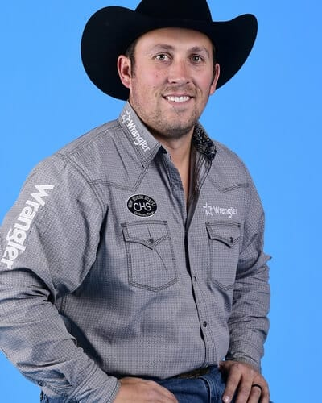
Riley has had many mentors that have been the best in the business. He comes from a long line of steer wrestlers. In fact, there have been five Duvalls who have competed at the Wrangler National Finals Rodeo in the steer wrestling a total of 33 times. Riley’s great-uncle Roy has contributed the majority of those and holds the record at 24.
Riley’s dad, Sam, uncle, Spud, and cousin, Tom have each been there twice. And now Riley is headed to the NFR for the third time. While he is a long way from Roy’s record, he now is in second place in the family.
Professional
2019 Highlights
• Won the Sikeston (Mo.) Jaycee Bootheel Rodeo
• Won the Ram Prairie Circuit Finals (Duncan Okla.)
• Won the Angelina Benefit Rodeo (Lufkin, Texas)
• Won the Phil Gardenhire Pro Rodeo (Poteau, Okla.)
• Won the Nebraska’s (Burwell) Big Rodeo
• Co-champion at the St. Paul (Ore.) Rodeo
Tanner Brunner: Tanner Brunner – Ramona, Kan. ($74,950) 2-time WNFR qualifier
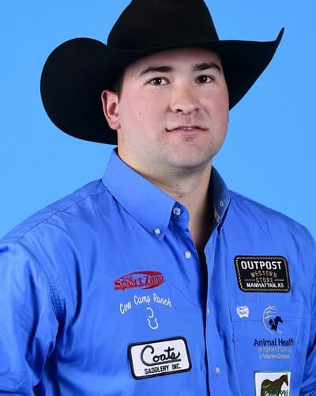
Tanner Brunner is returning to Las Vegas for his second Wrangler National Finals Rodeo in steer wrestling. He qualified in sixth place last year, but only placed in one round and dropped to 15th by the end of the finals.
This year he comes into the finals in 15th and is hoping to improve that standing during 10 rounds at the Thomas & Mack Center.
Professional
2019 Highlights
• Won the Ponoka (Alberta) Stampede
• Won the Medicine Hat (Alberta) Stampede
• Won the Beef Empire Days PRCA Rodeo (Garden City, Kan.)
Dakota Eldridge: Dakota Eldridge – Elko, Nev. ($81,103) 6-time WNFR qualifier
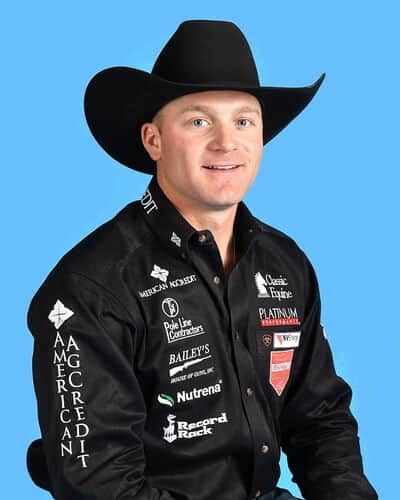
Nevada native Dakota Eldridge will be making the trip south from his hometown of Elko to Las Vegas to compete at his sixth Wrangler National Finals Rodeo. He qualified for the WNFR in steer wrestling for five years in a row, from 2013 to 2017.
Last year he started out to be his best year yet. He won the San Antonio Stock Show Rodeo and kept winning until July. That’s when he tore up his knee at Cheyenne Frontier Days. He missed the rest of the season and finished the year 24th in the world standings.
Dakota’s comeback was slower than what he had hoped for. He didn’t crack the Top 15 until late April when he won more than $5,100 at Clovis, California. Other wins this season included Greeley, Colorado; Las Vegas Days, Nevada; Ramona and Norco, California; Lynden, Washington, and Dodge City, Kansas. His combined winnings between Greeley (July 3) and Dodge City (August 4) were over $18,000. He’ll start the 2019 NFR in 11th place with $81,103 in regular season earnings.
Professional
2019 Highlights
• Won the Clovis (Calif.) Rodeo
• Won the Greeley (Colo.) Stampede
• Won the Las Vegas (Nev.) Days
• Won the Ramona (Calif.) Rodeo
• Won the Lynden (Wash.) PRCA Rodeo
• Won the Dodge City (Kan.) Roundup Rodeo
• Won the Norco (Calif.) Mounted Posse PRCA Rodeo
• Co-champion at the Mountain Valley Stampede Rodeo (Heber City, Utah)
Tyler Waguespack: Tyler Waguespack – Gonzales, La. ($97,130) 5-time WNFR qualifier 2-time World Champion
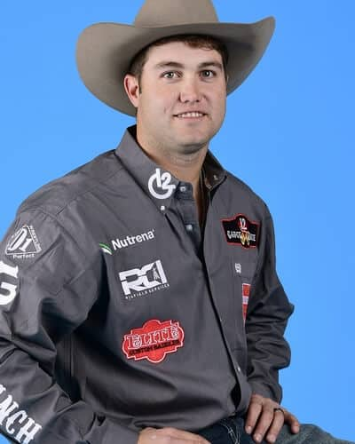
There is something to be said for momentum. Just ask Tyler Waguespack.
He’s had momentum on his side and been able to use it to his advantage to qualify for five-consecutive Wrangler National Finals. He left Las Vegas on two of those occasions with the gold buckle awarded to world champions.
Professional
2019 Highlights
• Won the San Antonio (Texas) Stock Show & Rodeo
• Won the Spanish Fork (Utah) Fiesta Days Rodeo
• Won the Dixie National Rodeo (Jackson, Miss.)
• Won the Leesville (La.) Lions Club Rodeo
• Won the Kit Carson County Pro Rodeo (Burlington, Colo.)
• Won the Tri-State Rodeo Cinch Shoot-Out (Fort Madison, Iowa)
Tyler Pearson: Tyler Pearson – Louisville, Miss. ($83,109) 4-time WNFR qualifier 2017 World Champion
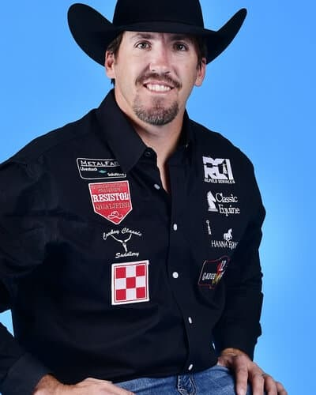
When Tyler Pearson backed into the timed-event box at the 2018 Wrangler National Finals Rodeo, he was wearing the world champion steer wrestling buckle and riding the best horse in the PRCA.
But no matter what happened inside the arena in the Thomas and Mack Center, Tyler and Kyle Irwin, “Scooter’s” owners, their sponsors and fans had already made a commitment outside of the arena that would change lives.
Professional
2019 Highlights
• Won the Ram National Circuit Finals Rodeo (Kissimmee, Fla.)
• Won the Omaha (Neb.) River City Rodeo
Stetson Jorgensen: Stetson Jorgensen – Blackfoot, Idaho ($90,220) First-time WNFR qualifier
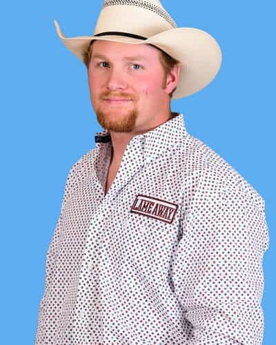
Stetson Jorgensen joined the PRCA in 2015 and in the first three years of his membership earned $52,695. The bulk of that was in 2018 as he was working to set himself up for the 2019 season.
The Blackfoot, Idaho resident wanted to be among the top 50 in the world to qualify for the winter building rodeos. He finished 38th in the world standings in 2018 with $37,601. This year he set out to qualify for his first Wrangler National Finals Rodeo.
Professional
2019 Highlights
• Won the NILE Pro Rodeo (Billings, Mont.)
• Won the RAM Wilderness Circuit Finals Rodeo (Heber City, Utah)
• Won the Golden Spike Rodeo (Tremonton, Utah)
• Co-champion at the Mountain Valley Stampede Rodeo (Heber City, Utah)
• Co-champion at the Red Bluff (Calif.) Round-Up
• Co-champion at the Annual Fourth Of July Celebration (Window Rock, Ariz.)
• Co-champion at the Mountain Valley Stampede Rodeo (Heber City, Utah)
Hunter Cure: Hunter Cure – Holliday, Texas ($104,568) 5-time WNFR qualifier 2013 & 2015 World Champion
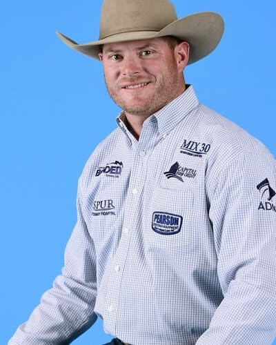
A big part of Hunter Cure’s success this year can be attributed to one of the most important equine partners that he has ever had.
In 2013 and 2015, Cure rode a steer wrestling horse he calls Charlie to world championships. He made his first trip to Las Vegas to compete at rodeo’s championships in 2009. He was there also in 2018 and is making his fifth trip this year.
In 2016 Charlie cut his foot. That injury was not just threatening Charlie’s career, it nearly took his life. The Cures did everything they could just to keep him comfortable and let him live out his days in the luxury of a pasture.
Professional
2019 Highlights
• Won the Washington (Puyallup) State Fair Pro Rodeo
• Won the Williams Lake (Alberta) Stampede
• Won the Oakdale (Calif.) Saddle Club Rodeo
• Won the Snake River Stampede (Nampa, Idaho)
• Co-champion at the Red Bluff (Calif.) Round-Up
Courtesy of WranglerNetwork.com